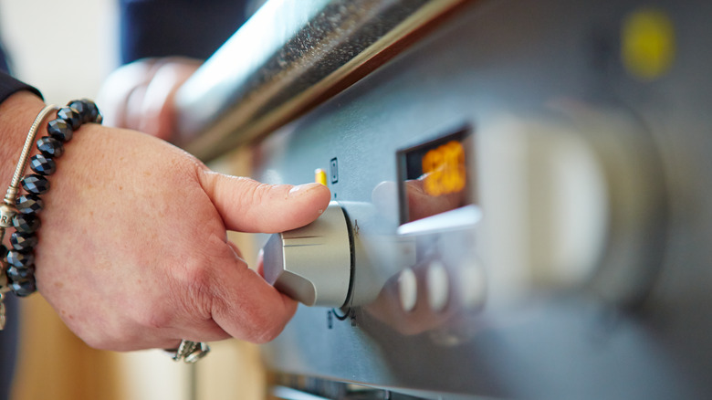

Ingridient :
- 1 cup (2 sticks) unsalted butter, softened
- 2 cups granulated sugar
- 4 large eggs, at room temperature
- 1 tablespoon vanilla extract
- 3 cups all-purpose flour
- 1 tablespoon baking powder
- 1/2 teaspoon salt
- 1 cup whole milk, at room temperature
Step 1:

Preheat your oven to 350°F (175°C).
Step 2:

In a large mixing bowl, cream together the softened butter and sugar until light and fluffy, using an electric mixer or stand mixer.Add the eggs one at a time, beating well after each addition. Mix in the vanilla
extract.In a separate bowl, whisk together the all-purpose flour, baking powder, and salt.Gradually add the dry ingredients to the butter mixture, alternating with the whole milk.Start and end with the dry
ingredients, mixing just until combined after each addition. Be careful not to overmix the batter.
Step 3:

Grease and flour two 9-inch round cake pans and line the bottoms with parchment paper for easy removal.
Step 4:

Divide the cake batter evenly between the prepared cake pans.
Step 5:

Bake in the preheated oven for about 25-30 minutes, or until a toothpick inserted into the center of the cakes comes out clean.
Step 6:

Remove the cakes from the oven and let them cool in the pans for 10 minutes. Then, carefully transfer them to wire racks to cool completely.
Step 7:

Once the cakes have cooled, you can frost them with your favorite frosting or layer them with jam, whipped cream, or buttercream. Enjoy your delicious homemade vanilla sponge cake!
Pro Tip:
Feel free to get creative by adding different flavorings or fillings, such as chocolate chips, fresh fruits, or nuts, to customize the cake to your liking. Happy baking!